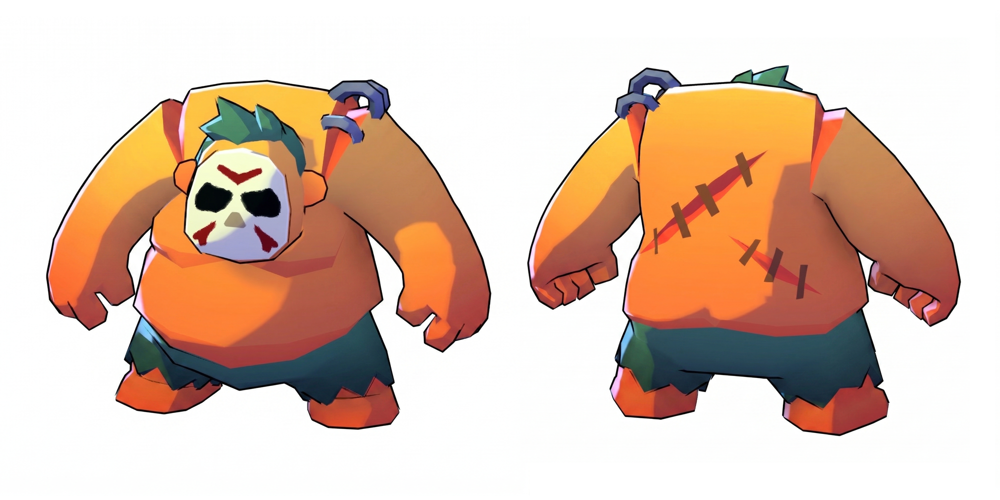
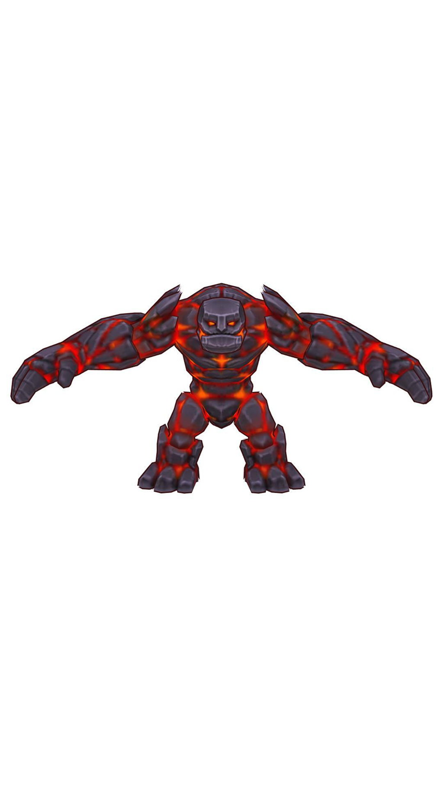
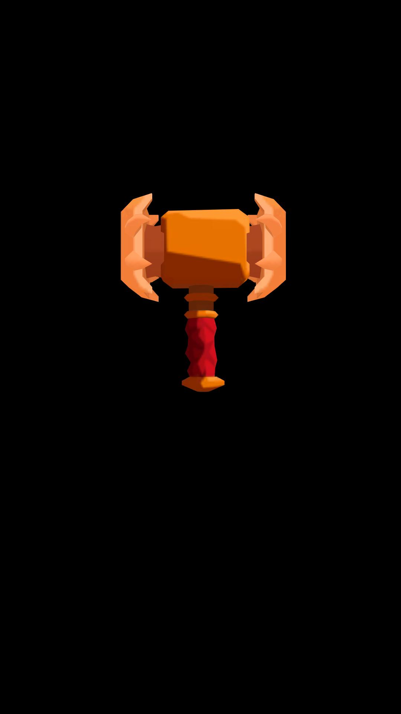

01 Концепт
Логлайн
Ночью в каньоне лавовый голем втрое выше Пуджа обрушивает на него кулак. Пудж взбегает по руке врага и рубит его топором, но лезвие разлетается о камень. Голем отшвыривает Пуджа в скалу, и от удара из стены вываливается древний молот, блестевший там с начала ролика. Пудж поднимает молот, одним ударом разносит голема в щепки, и из обломков выпадает кристалл.
Почему Пудж побеждает (логика v2)
- Заявка: в шоте 2 на общем плане в скале блестит застрявший молот. Зритель видит его краем глаза.
- Проблема: топор ломается о камень (шот 5). Обычное оружие против голема не работает.
- Ирония: удар, который должен был добить Пуджа, впечатывает его в ту самую скалу. Трещины доходят до молота.
- Оплата: молот падает к ногам Пуджа. Сила приходит из оружия, а не из ниоткуда. В игре это прямой мост к экипировке.
Голливудские приёмы
- Заявка и оплата (Chekhov’s gun) с молотом
- Смена крупности на каждой склейке: ECU ↔ extreme wide
- Speed ramp: слоу-мо в прыжке с топором (шот 4)
- Hit-stop 0.25 с на ударе молотом (шот 11)
- Подъём молота снизу, как «достать меч из камня»
- Тишина и звон в ушах перед реваншем
- Ось 180°: Пудж атакует слева направо
02 Три акта
03 Рефы, локация, правила

the Ogre · @image1
references/Pudge.png. Маска-череп, зелёный ирокез, крюки на плече, швы на спине.
В акте 1 у него в правой руке обычный топор мясника (описывается текстом, отдельный реф не нужен).

the Lava Golem · @image2
references/Red_Golem.png. Тёмно-фиолетовые каменные блоки, красная лава в швах по всему телу, огромные руки-кувалды, как у гориллы, квадратная челюсть с зубами, оранжевые глаза, шипы на плечах.
Ядра нет: светится весь шовный «скелет». Масштаб голем : Пудж = 3 : 1.

the Hammer · @image3
references/Hammer.jpg. Оранжевый боёк, по бокам светлые лезвия-полумесяцы, красная рукоять.
Шоты 2 и 7: в скале. Шот 8: падает. С шота 9: в руке Пуджа.
Локация · @image4 = loca.jpg (стиль)
Ночной каньон на краю леса: отвесные сине-фиолетовые скальные стены, по их кромке силуэты елей, на дне голубые светящиеся грибы и камни. Палитра из loca.jpg.
Свет: холодная луна плюс тёплое красное свечение лавы голема (главный тёплый источник). С шота 9 к нему добавляется оранжевое свечение молота.
Правила непрерывности
- Ось 180°: Пудж и скала с молотом слева, голем справа. Камера с «южной» стороны.
- Направление экрана: атака Пуджа идёт →, отброс ←.
- Молот торчит из скалы на одном месте, примерно на 2/3 её высоты.
- Топор: целый в шотах 1–4, после шота 5 обломок, потом исчезает.
- Кристалл впервые появляется только в шоте 12.
04 Шот-лист и карты камер
Карта показывает каньон сверху. ● Пудж, ⬢ голем, ■ молот, ▲ камера с конусом обзора, пунктир — ось 180°, стрелки — движение. Слева скальная стена.
05 Как это превратится в Seedance
Две генерации
- A, шоты 1–6, 7.4 с: от кулака до шлепка. @image1 Пудж, @image2 голем, @image3 молот (в скале), @image4 локация.
- B, шоты 7–13, 7.6 с: от удара о скалу до лута. Те же рефы.
Шов проходит по действию: Пудж вылетает из кадра влево в конце A и влетает в скалу в начале B.
В монтаже, а не в промпте
- Hit-stop в шоте 11 (фриз 6 кадров и белый флеш)
- Слоу-мо в шоте 4, если Seedance не даст сам
- Тряска на ударах
- Склейка A|B и финальная склейка на геймплей
Рискованные места
- Шот 3: бег по руке, а не рядом с ней
- Шот 5: лезвие должно разлететься, а не застрять
- Шот 8: молот должен выпасть из скалы, а не появиться из воздуха. Поэтому он есть в кадре с шота 2 и в шоте 7
- Шот 12: голем раскалывается на глыбы, а не «тает»
- B — 7 шотов за 7.6 с, это плотно. Если движок начнёт сливать действия, шот 10 уходит первым
06 Звуковая партитура
| # | Время | Звук | Склейка |
|---|
07 Осталось уточнить
1. Цвет кристалла
Сейчас он алый, как самоцвет, чтобы отличаться от лавы. Если в игре есть своя валюта или камень (например, гемы), лучше взять их цвет и форму. Есть реф?
2. Финальный кадр
Пудж с поднятым молотом над кристаллом, затем склейка на геймплей. Или в конце нужен эндкарт или текст (CTA)? Тогда его добавим в монтаже.